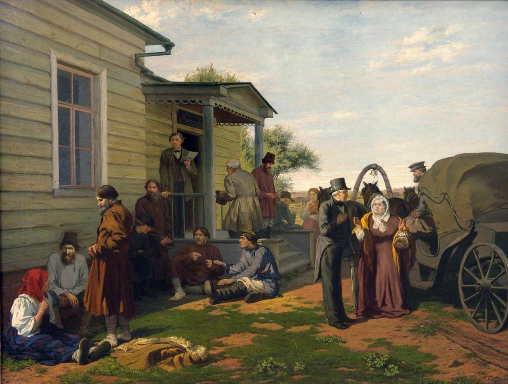

Константин Аполлонович Савицкий
У мирового суда, XIX век

Холст, масло, 72×95 см
Пермская государственная художественная галерея, Пермь.
Драматическая сторона народной жизни пореформенного периода, её национальное своеобразие, стремление к созданию картин-эпопей большого художественного обобщения получили в произведениях К.А. Савицкого особенно яркое, талантливое выражение. Творческий путь художника, как участника Товарищества передвижных художественных выставок, начинается экспонированием на второй выставке в 1872 г. картин бытовой тематики: «Дети» и «Утро чиновника». Картина «У мирового суда» не имеет даты исполнения. Однако по целому ряду стилистических и сюжетно-тематических признаков может быть отнесена к раннему периоду в творчестве художника. Укажем прежде всего на актуальность темы. Введённый судебной реформой в 1864 г. в 10 губерниях России институт мировых судей просуществовал до 1889 г. и был упразднён везде, кроме Москвы, Петербурга и Одессы. Таким образом, для Савицкого, жившего с 1890-х годов в Пензе, эта тема вряд ли могла стать значимой. Кроме этого, особенности трактовки крестьянских типов явно указывают на академическую выучку, когда один и тот же натурщик мог использоваться для создания совсем разных персонажей. Ещё одна особенность картины, указывающая на её ранний характер – специфика критико-описательного метода, к которому прибегает художник. В нём ещё очень много интонаций от живописи Василия Перова, приёмов намеренного обострения сюжета, превращения его в гиперболу. Именно таким образом художник собирает своих персонажей, призванных продемонстрировать многоликую картину попрания справедливости. В соответствии с Законом о «Учреждении судебных установлений», и рядом других Уставов мировой судья соединял обязанности предварительного следствия и примирения, выполнял на территории своего участка функции административного и охранительного характера. Всё это не могло не привести к очередному витку коррупции и чиновничьего бюрократизма. Вместе с критикой ритуализированных, условно-церемониальных и пустых по своему значению форм быта, мировой суд становится осколком дискредитирующих себя социальных отношений и институтов пореформенного времени. Однако, история развития отношений искусства и общества всё явственнее свидетельствовала о том, что публика ищет в произведениях мастеров изобразительного искусства не только значимых идей, но и выразительных художественных средств, живописных качеств. Уже выставляли свои полотна молодые художники, в творчестве которых извечная проблема содержания и формы, искусства и действительности будет разрешаться другими художественными средствами. После появления репинских «Бурлаков», Крамской, размышляя о судьбах русского искусства, запишет следующие строки: «То, что было вчера еще впереди, завтра, в буквальном смысле завтра, будет невозможно, и не для одного или двух невозможно, а для всех станет очевидным. Четыре года тому назад Перов был впереди всех, еще только четыре года, а после Репина, «Бурлаков», он невозможен…». Для всех стало очевидным, что уже невозможно остановиться хотя бы на маленькую станцию, оставаясь с Перовым во главе».
Источник: https://permartmuseum.ru/exhibit/28753